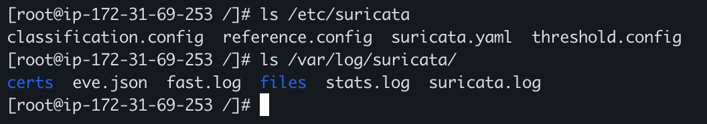
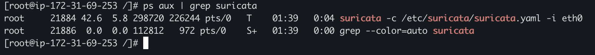

Walkthrough
Let's start by deploying two EC2 instances within our VPC. For our source instance, we'll go with a free-tier Amazon Linux 2 AMI and a t3.mirco instance type. Note that traffic mirroring is only enabled for nitro enabled instance - a more detailed list can be found here. We'll choose the default settings for most of the options, and I'll detail the few changes we'll want below:
1. Make sure that you instance is in a public subnet. If you're utilizing the default VPC then by default newly created instances will be placed in this public subnet. If you have created a new VPC you'll need to confirm this instance is in one of the public subnets.
2. For our user data, I'm going to deploy a simple web server just to help us verify our instance is up and publily accesible. You can paste the code below within the user data section on the 'Configure Instance Details' step of the EC2 creation process.
#!/bin/bash
sudo su
yum install -y httpd
systemctl start httpd
echo "hello!" > /var/www/html/index.html
systemctl restart httpd
3. In our security group creation step, we're going to allow all traffic from a source of anywhere. While this is not best practice and should never be utilized in a real-world situation, we'll configure the instance like this for now to make sure we get ample logs within Suricata.
Now we'll create our target EC2 instance. For this, we'll choose a slighly more powerfull instance type of t2.medium to ensure Suricata has enough procesing power. Note that this is right around the minimum CPU/Memory configuration that will sucesfully run Suricata. I'm also utilizing a CentOS 7 AMI which can be found here. We'll go with the default settings again for most of the options, along with the user data script below to install suricata on a CentOS 7 server. For this security group we'll want to restrict access to TCP 22 (ssh) from only our IP. This will allow us to configure Suricata but restrict all other access.
#!/bin/bash
sudo su
yum install -y epel-release
yum install -y gcc libpcap-devel pcre-devel libyaml-devel file-devel zlib-devel jansson-devel nss-devel libcap-ng-devel libnet-devel tar make libnetfilter_queue-devel lua-devel PyYAML libmaxminddb-devel rustc cargo lz4-devel
cd /etc
yum install -y wget
wget https://openinfosecfoundation.org/download/suricata-4.1.8.tar.gz
tar -xvzf suricata-4.1.8.tar.gz
cd suricata-4.1.8
./configure --prefix=/usr --sysconfdir=/etc --localstatedir=/var --enable-nfqueue --enable-lua
make
make install-full
ldconfig
suricata-update -f -v --local=/etc/suricata/local.rules
Once that instance is running let's confirm we can succefully SSH to it and that Suricata was isntalled with our user data script. Below we see the appropriate /etc/suricata and /var/log/suricata directories have been created.
Configuring Suricata itself will take a bit of tweaking based on your VPC and current set up. I highly reccomend following the basic setup guide here. This will detail a number of variables to set based on the CIDR range of your VPC and steps on how to start Suricata itself (suricata -c /etc/suricata/suricata.yaml -i eth0). Once completed we can confirm this by running 'ps aux | grep suricata'.
To be continued